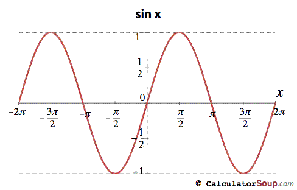
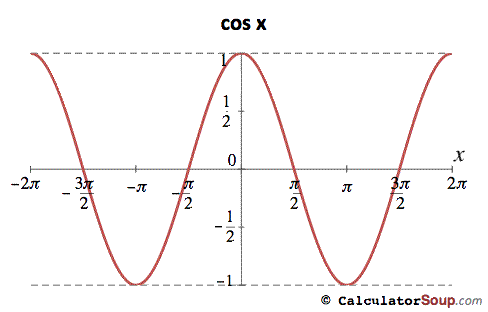

Introduction
-
What is Graphing:
To graph a trigonometric function means to interprete its equation in terms of a graph. This is done by first graphing the parent function followed by applying any transformations.
Graphing Parent Functions
-
Identifying Parent Functions:
Identify what the parent function of the transformed function is. to Identify the parent function look at what trigonometric function is in the equation. For instance if the equation is f(x)=2sin[3(x-2)]+4 the parent function is g(x)=sin.
 
-
Key Parent Function Points:
To easily graph the the trigonometric parent functions 5 key points from each are are needed. These points include:
Graphing Transformations
-
What is Mapping Notation:
Mapping Notation allows graph a transformed trigonometric function from its equation after transformations have been applied to its parent function.
To preform mapping notation you will need to:
• Identify the parent function
• Know the 5 key points for the parent function
• Identify the transformations that have been applied
-
How to use Mapping Notation:
Mapping notations takes one set of coordinates and maps its onto another set of coordinates that have went though one or more mathematical operations. In this case the 5 points of the parent function are going to be mapped onto the transformed points.
Mapping notation for transformations is:
*Confused about what "a", "k", "d" and "c" values are? see Transformations Page for help.
Example
-
Question
The function f(x) has undergone several transformations and the new equation is g(x) = 3sin[2(x + 1)] -4. What are 5 points on the graph g(x)?
-
Step 1: Identify the Parent Function
The parent function of function g(x) is f(x) = sin(x). This is the parent function since the function g(x) contained the trigonometric function sin.
-
Step 2: Five Key Points for Parent Function
-
Step 3: Apply Mapping Notation
After applying mapping notation in the right colume are 5 values on the graph g(x).